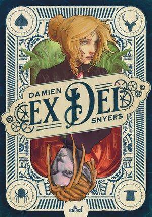

Cochrane vs Cthulhu
In 1815, Napoléon achieve the construction of the Fort Boyard and Lord Cochrane came back in the bay to destroy this bastion. But he find himself face by a surnatural threat , Cthulhu , A sleeping god who then emerges from the depths of the oceans to claim control of the Earth!

Lord Cochrane vs L’ordre des Catacombes
Jean-Baptiste Dallier, un bonapartiste ami des frères Champollion, est assassiné dans les catacombes. Le célèbre héros écossais Lord Cochrane arrive alors à Paris. Il y retrouve Champollion le Jeune qui possède les preuves de l'existence de Cthulhu, un monstre antédiluvien.

Ex Dei
Dans un monde où se mêlent machines à vapeur, magie et trolls, une humaine et un elfe tentent de sauver leur peau. Elle, membre d’une organisation secrète en possession d’un artefact convoité, lui, gentleman cambrioleur aux yeux plus gros que le ventre. Mais que peut-on faire face à un homme qui ne veut pas mourir ?
